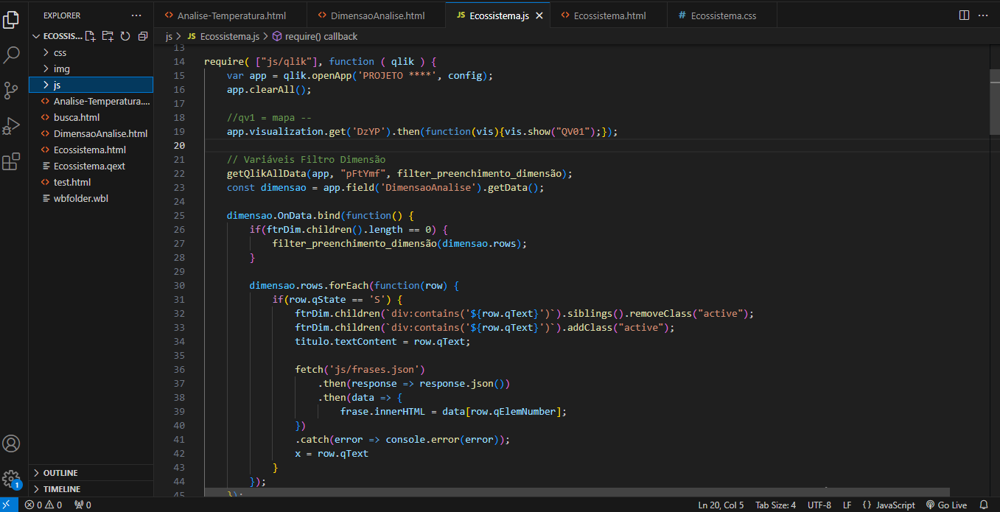

Ecossistema de Inovação
Esta página tem como objetivo oferecer uma visão geral do trabalho que realizei nesse projeto. Devido à natureza sensível dos dados contidos nos painéis QVF do contratante, não é possível divulgar o repositório ou mais detalhes específicos.
Este projeto envolveu a criação de painéis no Qlik Sense com o propósito de mapear o desenvolvimento de diversos setores em diferentes regiões. Minha contribuição foi a integração desses painéis a um sistema web, onde coletei manualmente os dados e filtros necessários através da API de integração do Qlik Sense.
Demonstrativo
O vídeo demonstra o funcionamento do sistema em um ambiente local. É importante destacar que os dados apresentados no vídeo são fictícios e utilizados apenas para ilustrar o funcionamento do que foi desenvolvido.
JavaScript
Na imagem é possível ver um pouco do código de busca dos dados do QVF